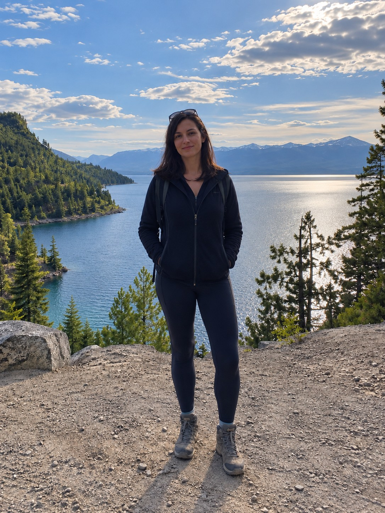
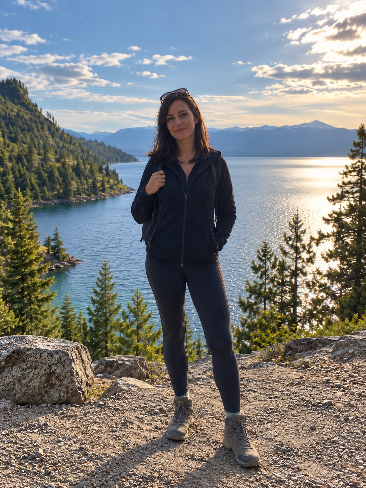
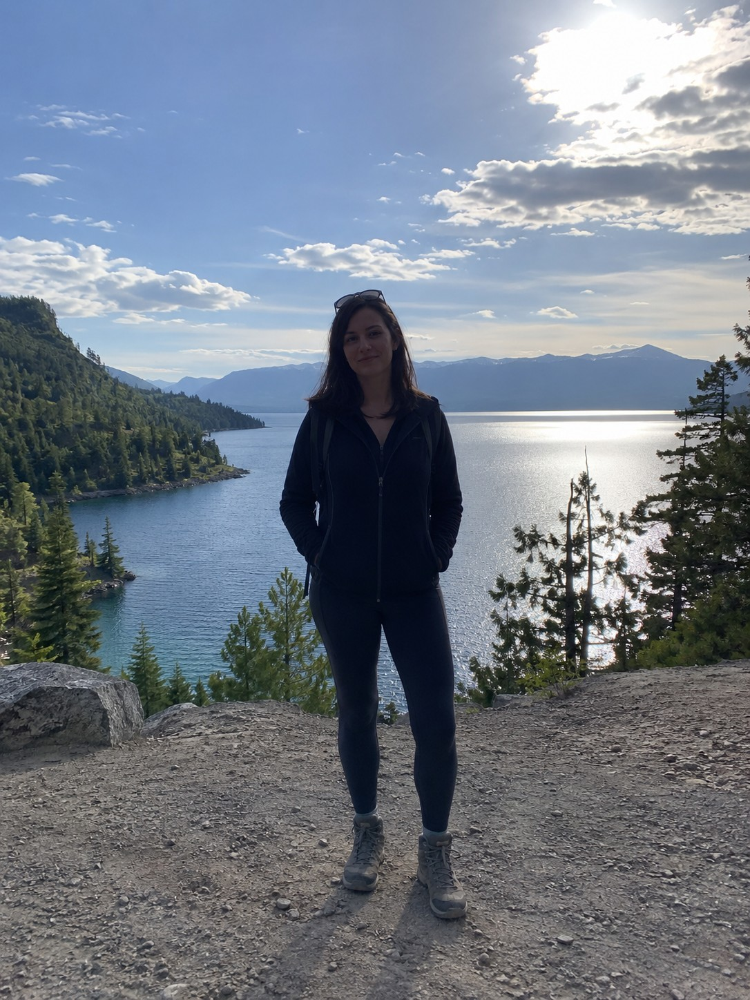
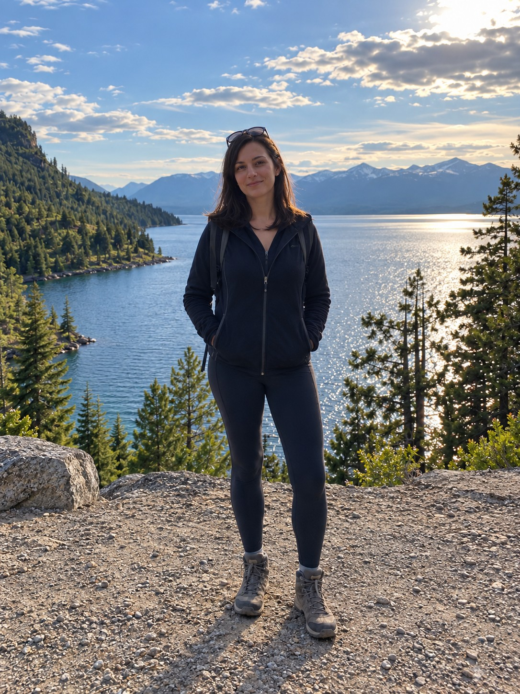

01自然修好 轻一点
改善曝光与色彩，保留原来的感觉。
给生活一点光 / LIGHT ISLE
好风景、好表情，还有没拍好的瞬间。
换一点光，换一个构图，看看照片的另一种可能。
上传 → 看三张效果 → 喜欢再付费下载
从轻轻修好，到重新想象。
选择权，一直在你手里。

创意重拍
原片合成原片 · 实际 AI 编辑案例；首页上传为本地调色与裁剪演示。
人像 / 风景 / 旅行 / 日常 / 宠物 / 美食
六组合成原片与实际 AI 编辑结果，来自修图测试室。场景与细节可能重绘，完整三档和问题记录均保留；尚未接入首页自动生成。
ONE PHOTO. THREE DIRECTIONS.
一次看三个版本。
不用先决定，看到之后再选。

01改善曝光与色彩，保留原来的感觉。

02调整光影与取景，让主体更突出。
尝试新的视角与姿态，探索更多可能。
以上为同一合成原片的实际 AI 编辑结果；部分背景被重绘，人物保真仍需人工复核。
放大看看区别 ↗LESS EFFORT. MORE BEAUTIFUL.
不必懂参数，也不用写提示词。
选一张你喜欢、又觉得差一点的照片。
从自然修好到创意重拍，对比之后再决定。
为所选结果付费，获取同一版无水印照片。
YOUR PHOTO. THREE POSSIBILITIES.
三个版本都看看。心动了，再带走。
无订阅 · 无积分 · 只为喜欢的结果付费
或从你的相册里，挑一张喜欢的
JPG / PNG / WebP · 最大 20 MB框架演示：仅传至本机服务，最长保留 24 小时，可删除不需要。先查看三个版本，选中喜欢的再下载。当前框架演示不收取费用；真实支付尚未接入。
不会。本地演示仅将照片传到这台电脑上的服务，不发送给外部 AI，也不加入照片墙。照片与结果最长保留 24 小时，服务运行时自动清理，也可在结果窗口立即删除。关闭页面后仍可在有效期内恢复任务。
三档方案、结果选择、原图对比、拍摄建议展示和下载流程已串联。当前图片采用本地调色与裁剪，预设案例分类仅用于演示；自动语义识别、真实 AI 重拍、审美保真检查和真实支付尚未接入。